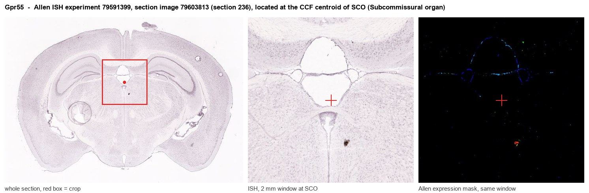
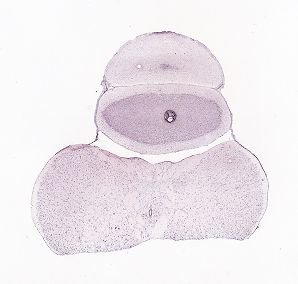
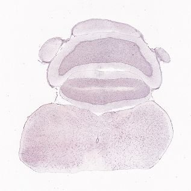
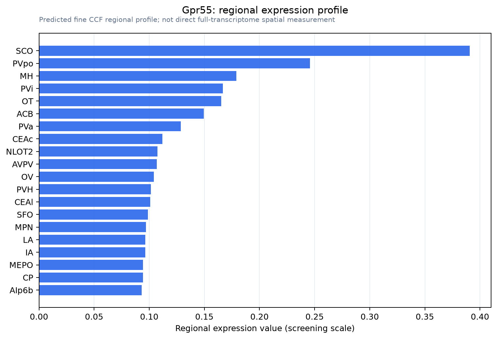

Gpr55
G protein-coupled receptor 55
Spatial tier: STRICT_EXCLUSIVE · Class: GPCR · Top region: SCO (Subcommissural organ) · Positive regions: 7/554
44.8Discovery Score
36.4Targetability Score
CEvidence grade C
What this means: Gpr55: predicted fine-region profile is strict-exclusive, with 7 positive regions out of 554 (limit 12); direct spatial validation is required.
Function in SCO: evidence, prediction, innovation
- Gene function
- Gpr55 encodes an orphan-derived class-A GPCR activated by L-alpha-lysophosphatidylinositol (LPI) and, with debate, by THC, anandamide and O-1602; cannabidiol is an antagonist. It couples to G12/13-RhoA-ROCK and Gq, giving Ca2+ release, ERK activation and cytoskeletal contraction, and is structurally distinct from CB1/CB2.
- Region function
- The subcommissural organ is a secretory ependymal gland under the posterior commissure at the third-ventricle/aqueduct junction, releasing SCO-spondin into CSF to form Reissner's fibre and shaping aqueduct patency, CSF flow and axial morphogenesis.
- Published in this region
- inferred No region-specific literature found. Closest: GPR55 modulates pain in the adjacent periaqueductal grey (Deliu et al. 2015) and hippocampal synaptic plasticity (Hurst et al. 2017), while the related lysophospholipid LPA acting on CSF-facing cells initiates fetal and post-haemorrhagic hydrocephalus (Yung et al. 2011).
- Predicted function
- Prediction: GPR55 lets SCO cells read CSF lysophospholipid tone, LPI acting through G12/13-RhoA-ROCK on apical actomyosin tension, junctional integrity and granule release, the axis by which LPA injures ventricular surfaces. Gpr55 knockout or CID16020046 should preserve Reissner's fibre and aqueduct patency in LPA- or blood-induced hydrocephalus; LPI or O-1602 should disrupt SCO-spondin release and cause ventriculomegaly.
- Innovation
- ★★★★★ 5/5 GPR55 has never been examined in any ventricular secretory epithelium, yet lysophospholipid signalling is a validated hydrocephalus mechanism.
- Tools
- Gpr55 knockout mice (Gpr55tm1Lex, Lexicon/Deltagen); agonists LPI, O-1602, ML184; antagonists CID16020046, ML193, cannabidiol; Sspo-Cre/Sspo-CreER; antibodies are poor, so use RNAscope.
- References
Direct evidence located at the region

Allen ISH experiment 79591399, section image 79603813 (section 236): the section that contains the CCF centroid of Subcommissural organ according to the Allen image-to-atlas alignment (reference_to_image), with a 2 mm window around that point. Left: whole section, red box = window. Middle: ISH signal. Right: Allen's expression-mask view of the same window. open this image in the Allen viewer
Look it up yourself: Allen Mouse Brain ISH for Gpr55Allen reference atlas: SCO (structure 599626923)ABC Atlas MERFISH viewer(in the ABC Atlas choose dataset MERFISH-C57BL6J-638850-CCF, colour cells by gene "Gpr55" or by parcellation_substructure "SCO")All genes confined to SCO + 3-D brain
Direct spatial evidence
MERFISH REGION LOCATOR

DIRECT ALLEN ISH

DIRECT ALLEN ISH

Regional expression figure

Predicted WMB × fine-CCF profile; not direct full-transcriptome spatial measurement.
Spatial profile
Evidence and specificity
- Evidence status
- PREDICTED_FINE
- Direct sources
- None; predicted localization only
- Exclusive threshold
- 12 positive regions out of 554
- Spatial specificity
- 0.320
- Top-region fraction
- 0.098
- Filter status
- PASS
Interpretation limits
- Cell-type-to-region projection is imputed expression, not direct spatial measurement.
- Adult reference atlases do not establish stability across age, sex, strain, state, or disease.
- Transcript abundance does not guarantee protein abundance or genetic-tool performance.